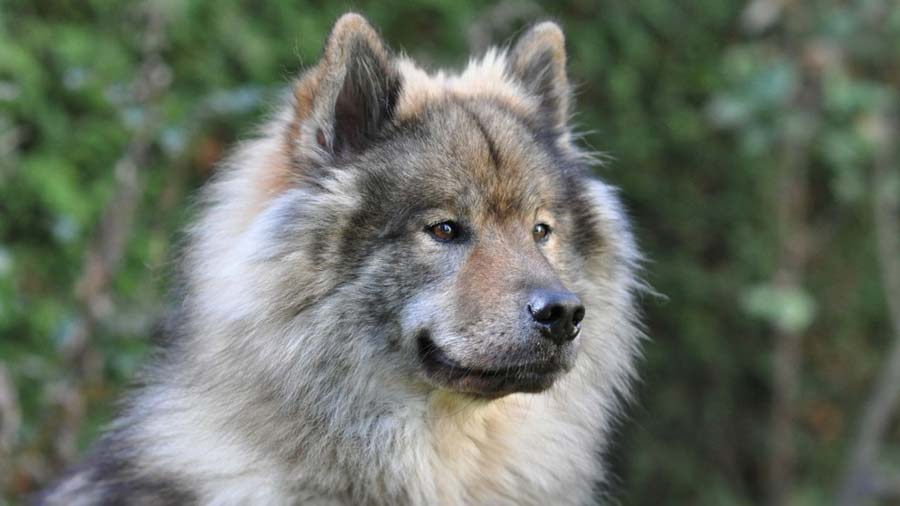
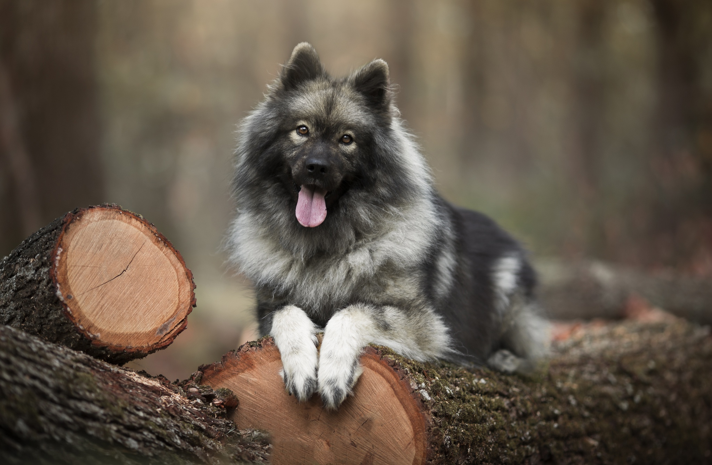
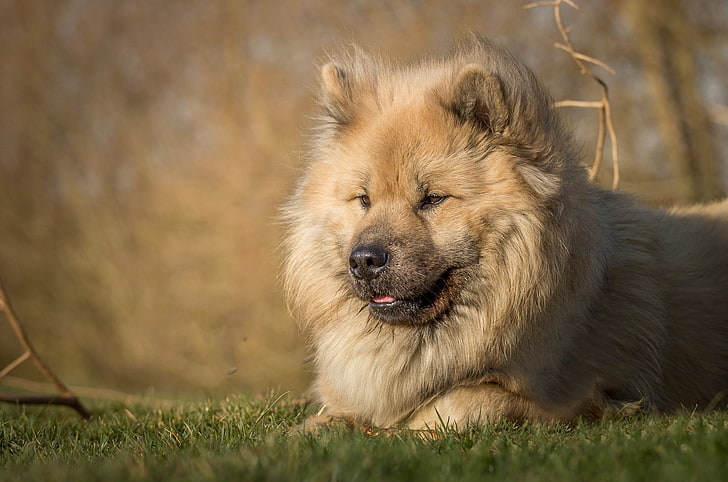

Eurasier

origin
Germany
size
Medium
color
Others
type
Cross Breed
breed group
Northern Breed (UKC)
character
Fluffy
temperament
Alert
Alert
Intelligent
Reserved
height
20-24 inches (52-60 cm)
weight
50-70 pounds (23-32 kg)
geography
Europe
overview
The Eurasier is a balanced, well-constructed, medium-sized Spitz (Spitzen) type dog with prick ears. It comes in different colors: fawn, red, wolf-grey, solid black, and black and tan. All color combinations are allowed, except for pure white, white patches, and liver color. Fédération Cynologique Internationale (FCI) standards call for the Eurasier to have a thick undercoat and medium-long, loosely lying guard hair all over the body, with a short coat on the muzzle, face, ears, and front legs. The tail and the back of the front legs (feathers) and hind legs (breeches) should be covered with long hair. The coat on the Eurasier's neck should be slightly longer than on the body, but not forming a mane. The breed may have a pink, blue-black or spotted tongue.
history
The Eurasier was developed in the '60s to be a gentle family dog and protector. German breeder Julius Wipfel began by crossing Chow Chows with Wolfspitzes (which in some countries are considered the same breed as the Keeshond). One Samoyed male also contributed to the new breed’s bloodlines. Originally called the Wolf Chow, the dogs were recognized in 1973 by the Federation Cynologique Internationale and given the name Eurasier to symbolize their combined European and Asian heritage. The dogs are popular in Germany and Switzerland but are still little known in the United States. The breed was recognized by the United Kennel Club in 1996 under the name Eurasian. The UKC categorizes it as a Northern breed, the FCI consider it a Spitz or Primitive type.
Photo Gallery

